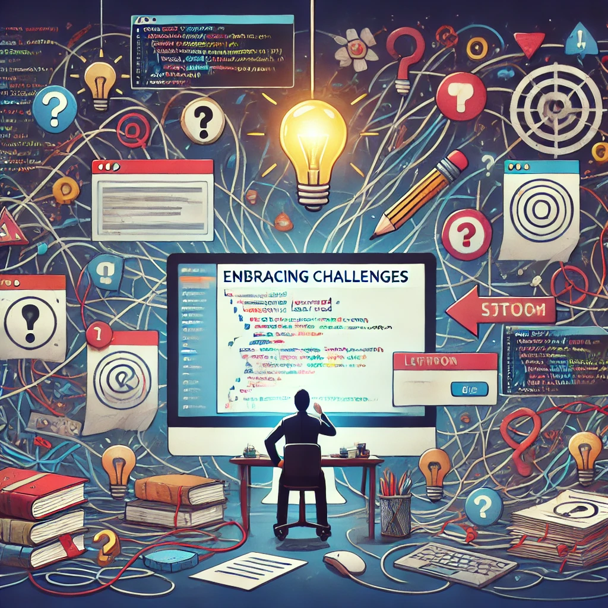

Crafting Digital Experiences: My Journey in Web Development and Design
October 5,2024 by Romarie Haughton
As a dynamic creator with a passion for building engaging websites and crafting user-friendly interfaces, I thrive on transforming ideas into digital realities.
My journey in web development has been fueled by a love for both technology and design, allowing me to create seamless experiences that resonate with users. Through my blog, I aim to share insights on design trends, coding techniques, and the creative process behind my projects, while also documenting my personal growth in this ever-evolving field. Join me as I explore the intersection of creativity and technology!
Embracing Challenges: Lessons Learned in Web Development
October 5,2024 by Romarie Haughton

In the world of web development, challenges are not just obstacles; they are invaluable opportunities for growth. Each project presents unique hurdles, whether it’s debugging complex code, optimizing user experiences, or keeping up with the latest technologies.
In this blog, I’ll share the lessons I’ve learned from overcoming these challenges, including practical tips and strategies that have helped me evolve as a developer. By embracing difficulties and learning from failures, I've discovered the true essence of resilience in this ever-changing field. Join me as I explore the journey of turning challenges into stepping stones for success!